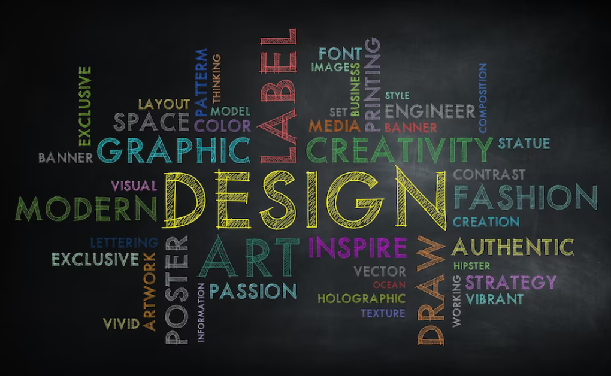

Web Development
We offer cutting-edge web development services to create stunning and responsive websites tailored to your needs.From Social Media Apps to watching and reading News, Streaming OTT platforms, doing payments, or connecting with colleagues, we need technology and that particular technology is Web Technology. According to the data of the Bureau of Labor Statistics(2021)

Digital Marketing
Our digital marketing services help you reach a wider audience and grow your online presence through SEO, social media, and more.Digital marketing is an ideal way to distribute communications—especially crisis messaging—both quickly and cost-effectively. It’s also a solid strategy to keep your audience actively engaged with your organization.

Graphic Design
Our graphic design team creates visually appealing designs for logos, brochures, advertisements, and other marketing materials. Using illustrations, we will explore the software that professionals in this field use, such as Adobe Photoshop, Adobe Illustrator and Adobe InDesign. You will be able to create various designs independently and understand how the numerous tools in each specified design program work.
